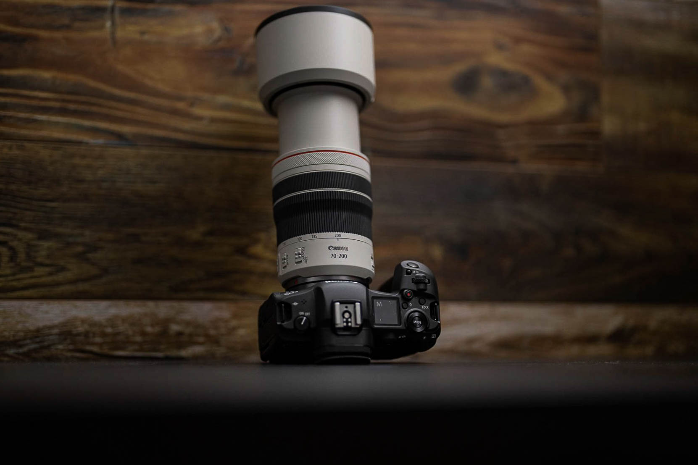
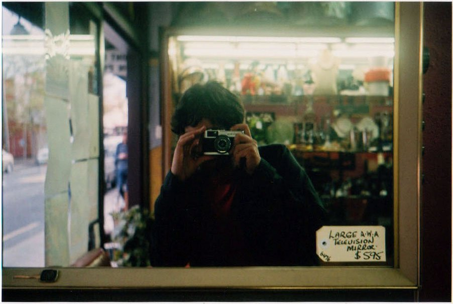

Capturing Life's Moments: The Art and Science of Photography
Introduction:
Photography is a powerful and universal language that transcends borders and cultures. It allows us to freeze moments in time, tell stories, and convey emotions with a single frame. In this blog, we'll dive into the fascinating world of photography, exploring its history, techniques, and how it has evolved into a diverse and influential art form.
Chapter 1: The History of Photography
Photography's journey began long before the invention of the digital camera or even color film. Take a trip back in time as we explore the early pioneers, such as Joseph Nicéphore Niépce and Louis Daguerre, who laid the foundations for this captivating art form. Learn about the evolution of cameras, from the bulky and cumbersome early models to the sleek and sophisticated devices we use today.
Conclusion: Embracing the Art of Photography
Photography is not just a hobby; it's a lifelong journey of exploration and self-expression. Whether you're a beginner with a smartphone or a seasoned professional with top-of-the-line gear, there's always something new to learn and discover in the world of photography. So, pick up your camera, venture out into the world, and start capturing the moments that matter to you. After all, as the saying goes, "A picture is worth a thousand words."
In this blog, we've only scratched the surface of the vast and captivating world of photography. It's a journey that offers endless opportunities for creativity, self-expression, and storytelling. So, grab your camera, venture out into the world, and start capturing the moments that matter to you. Happy shooting!